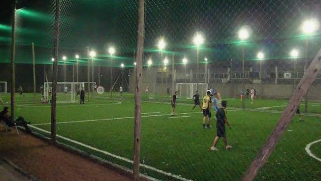

FÚTBOL 5 +30
Cancha: ITUZAINGÓ 2
Dirección: Av. del Mar, 335G+Q2W, Punta del Este, Maldonado
DOMINGO15/11
HORA21:00
EL PARTIDO EMPIEZA EN
–DÍAS
–HORAS
–MINUTOS
–SEGUNDOS
Organizado por JUAN ITUZA
RESEÑA DEL PARTIDO“Estar 10 minutos antes”
JUGADORES
12345678910
7 DE 10 JUGADORESFALTAN 3
Tocá un jugador para ver su perfil
EQUIPO 14 de 5
+LUGAR LIBRE
EQUIPO 23 de 5
+LUGAR LIBRE
+LUGAR LIBRE
ITUZAINGÓ 2

DepartamentoMaldonado
DirecciónAv. del Mar, 335G+Q2W, Punta del Este
ModalidadFútbol 5
Teléfono[TELÉFONO DE LA CANCHA]
Precio por jugador$180
VER EN GOOGLE MAPS ›FOTO
ORGANIZA ESTE PARTIDOJUAN ITUZA★ 4.2 de promedio · 100% de asistenciaÉl reservó la cancha y es a quien le llega el aviso si el partido queda en stand-by.
VER PERFILMAPA DE REFERENCIA
Ituzaingó 2 · Av. del Mar, 335G+Q2W, Punta del Este, MaldonadoABRIR EN GOOGLE MAPS ›
EL TANO“Goleador nato”42 años
37PARTIDOS JUGADOS
★ 4.6PROMEDIO
100%ASISTENCIA
REPUTACIÓN
Lo que dijeron sus compañeros en el último partidoJuan dijo“Mucha magia”
Pedro dijo“Erró 3 goles hechos”
Anónimo dijo“Fue al arco y se atajó todo”
HISTORIAL DE PARTIDOS
DOMINGO 08/11Ituzaingó 2 · Fútbol 5 +30SU NOTA★ 4.7
Juan dijo“Mucha magia”
Pedro dijo“Erró 3 goles hechos”
Anónimo dijo“Fue al arco y se atajó todo”
MIÉRCOLES 04/11Sportcenter Centro 2 · Fútbol 5SU NOTA★ 4.6
Mati dijo“Puso huevo hasta el final”
Anónimo dijo“Corrió todo el partido”
DOMINGO 01/11Alas Rojas · Fútbol 7 LibreSU NOTA★ 4.7
Chino dijo“Juega simple y bien”
Pato dijo“Metió 2 golazos”
Anónimo dijo“Puso huevo hasta el final”
JUEVES 29/10Ituzaingó 2 · Fútbol 5 +30SU NOTA★ 4.5
Fede dijo“Metió 2 golazos”
Anónimo dijo“Defendió como un león”
DOMINGO 25/10Sportcenter Centro 2 · Fútbol 5SU NOTA★ 4.4
Mati dijo“Puso huevo hasta el final”
Leo dijo“Siempre llega puntual”
JUAN ITUZA“Defensa rústico”39 años · organizador de este partido
52PARTIDOS JUGADOS
★ 4.2PROMEDIO
100%ASISTENCIA
REPUTACIÓN
Lo que dijeron sus compañeros en el último partidoMati dijo“Erró 3 goles hechos”
Juan dijo“Erró 3 goles hechos”
Bruno dijo“Metió 2 golazos”
HISTORIAL DE PARTIDOS
DOMINGO 08/11Ituzaingó 2 · Fútbol 5 +30SU NOTA★ 4.5
Mati dijo“Erró 3 goles hechos”
Juan dijo“Erró 3 goles hechos”
MIÉRCOLES 04/11Sportcenter Centro 2 · Fútbol 5SU NOTA★ 4.3
Bruno dijo“Metió 2 golazos”
Nacho dijo“Buen compañero, la pasa”
DOMINGO 01/11Alas Rojas · Fútbol 7 LibreSU NOTA★ 4.4
Leo dijo“Erró 3 goles hechos”
Leo dijo“Erró 3 goles hechos”
JUEVES 29/10Ituzaingó 2 · Fútbol 5 +30SU NOTA★ 4.2
Leo dijo“Erró 3 goles hechos”
Gonza dijo“Metió 2 golazos”
Pedro dijo“Siempre llega puntual”
DOMINGO 25/10Sportcenter Centro 2 · Fútbol 5SU NOTA★ 3.9
Juan dijo“Fue al arco y se atajó todo”
Santi dijo“Siempre llega puntual”
CHINO“Golero peligro”35 años
18PARTIDOS JUGADOS
★ 4.8PROMEDIO
100%ASISTENCIA
REPUTACIÓN
Lo que dijeron sus compañeros en el último partidoAnónimo dijo“Llegó 10 minutos tarde”
Pato dijo“Erró 3 goles hechos”
Santi dijo“Siempre llega puntual”
HISTORIAL DE PARTIDOS
DOMINGO 08/11Ituzaingó 2 · Fútbol 5 +30SU NOTA★ 5.0
Anónimo dijo“Llegó 10 minutos tarde”
Pato dijo“Erró 3 goles hechos”
MIÉRCOLES 04/11Sportcenter Centro 2 · Fútbol 5SU NOTA★ 5.0
Santi dijo“Siempre llega puntual”
Nacho dijo“Tremendo pase gol”
Nacho dijo“Corrió todo el partido”
DOMINGO 01/11Alas Rojas · Fútbol 7 LibreSU NOTA★ 4.8
Mati dijo“Puso huevo hasta el final”
Mauri dijo“Corrió todo el partido”
JUEVES 29/10Ituzaingó 2 · Fútbol 5 +30SU NOTA★ 5.0
Pedro dijo“Un poco caliente, protestó todo”
Anónimo dijo“Metió 2 golazos”
Anónimo dijo“Juega simple y bien”
DOMINGO 25/10Sportcenter Centro 2 · Fútbol 5SU NOTA★ 4.5
Gonza dijo“Puso huevo hasta el final”
Mati dijo“Juega simple y bien”
Nacho dijo“Corrió todo el partido”
NACHO“Pulmón del equipo”44 años
9PARTIDOS JUGADOS
★ 3.9PROMEDIO
100%ASISTENCIA
REPUTACIÓN
Lo que dijeron sus compañeros en el último partidoBruno dijo“Tremendo pase gol”
Gonza dijo“Juega simple y bien”
Juan dijo“Se cansó en el segundo tiempo”
HISTORIAL DE PARTIDOS
DOMINGO 08/11Ituzaingó 2 · Fútbol 5 +30SU NOTA★ 3.6
Bruno dijo“Tremendo pase gol”
Gonza dijo“Juega simple y bien”
Juan dijo“Se cansó en el segundo tiempo”
MIÉRCOLES 04/11Sportcenter Centro 2 · Fútbol 5SU NOTA★ 4.1
Pedro dijo“Siempre llega puntual”
Mauri dijo“Fue al arco y se atajó todo”
DOMINGO 01/11Alas Rojas · Fútbol 7 LibreSU NOTA★ 3.9
Juan dijo“Buen compañero, la pasa”
Bruno dijo“Defendió como un león”
JUEVES 29/10Ituzaingó 2 · Fútbol 5 +30SU NOTA★ 3.9
Mauri dijo“Defendió como un león”
Anónimo dijo“Muy chupón, no la pasa”
Juan dijo“Se cansó en el segundo tiempo”
DOMINGO 25/10Sportcenter Centro 2 · Fútbol 5SU NOTA★ 3.6
Juan dijo“Puso huevo hasta el final”
Mauri dijo“Defendió como un león”
Bruno dijo“Corrió todo el partido”
PATO“Gambeteador”33 años
25PARTIDOS JUGADOS
★ 4.4PROMEDIO
100%ASISTENCIA
REPUTACIÓN
Lo que dijeron sus compañeros en el último partidoLeo dijo“Defendió como un león”
Fede dijo“Un poco caliente, protestó todo”
Mauri dijo“Fue al arco y se atajó todo”
HISTORIAL DE PARTIDOS
DOMINGO 08/11Ituzaingó 2 · Fútbol 5 +30SU NOTA★ 4.7
Leo dijo“Defendió como un león”
Fede dijo“Un poco caliente, protestó todo”
Mauri dijo“Fue al arco y se atajó todo”
MIÉRCOLES 04/11Sportcenter Centro 2 · Fútbol 5SU NOTA★ 4.7
Anónimo dijo“Fue al arco y se atajó todo”
Mauri dijo“Siempre llega puntual”
DOMINGO 01/11Alas Rojas · Fútbol 7 LibreSU NOTA★ 4.4
Anónimo dijo“Siempre llega puntual”
Anónimo dijo“Juega simple y bien”
JUEVES 29/10Ituzaingó 2 · Fútbol 5 +30SU NOTA★ 4.7
Anónimo dijo“Llegó 10 minutos tarde”
Nacho dijo“Mucha magia”
Mati dijo“Juega simple y bien”
DOMINGO 25/10Sportcenter Centro 2 · Fútbol 5SU NOTA★ 4.4
Chino dijo“Juega simple y bien”
Anónimo dijo“Juega simple y bien”
Juan dijo“Metió 2 golazos”
MAURI“Pierna fuerte”47 años
30PARTIDOS JUGADOS
★ 4.1PROMEDIO
100%ASISTENCIA
REPUTACIÓN
Lo que dijeron sus compañeros en el último partidoAnónimo dijo“Siempre llega puntual”
Anónimo dijo“Mucha magia”
Anónimo dijo“Se cansó en el segundo tiempo”
HISTORIAL DE PARTIDOS
DOMINGO 08/11Ituzaingó 2 · Fútbol 5 +30SU NOTA★ 3.8
Anónimo dijo“Siempre llega puntual”
Anónimo dijo“Mucha magia”
Anónimo dijo“Se cansó en el segundo tiempo”
MIÉRCOLES 04/11Sportcenter Centro 2 · Fútbol 5SU NOTA★ 4.3
Bruno dijo“Metió 2 golazos”
Mati dijo“Mucha magia”
DOMINGO 01/11Alas Rojas · Fútbol 7 LibreSU NOTA★ 4.1
Anónimo dijo“Erró 3 goles hechos”
Bruno dijo“Muy chupón, no la pasa”
JUEVES 29/10Ituzaingó 2 · Fútbol 5 +30SU NOTA★ 4.1
Fede dijo“Tremendo pase gol”
Fede dijo“Erró 3 goles hechos”
Fede dijo“Se cansó en el segundo tiempo”
DOMINGO 25/10Sportcenter Centro 2 · Fútbol 5SU NOTA★ 3.8
Anónimo dijo“Corrió todo el partido”
Anónimo dijo“Defendió como un león”
Nacho dijo“Corrió todo el partido”
TOTO“Amigo de Juan”40 años · invitado
0PARTIDOS JUGADOS
—PROMEDIO
—ASISTENCIA
Todavía no jugó ningún partido en Falta Gente.
Este es su primer partido, lo trajo un amigo.
Este es su primer partido, lo trajo un amigo.